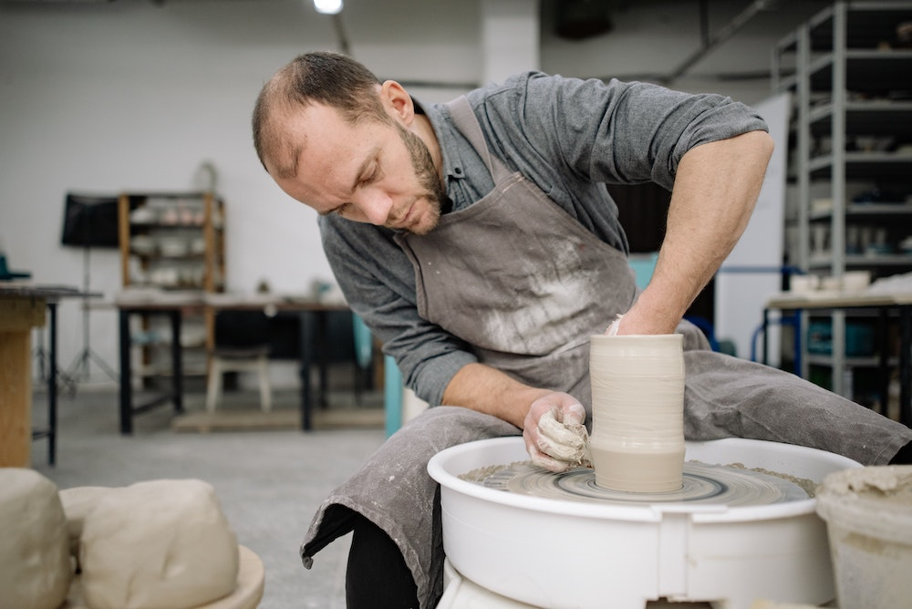
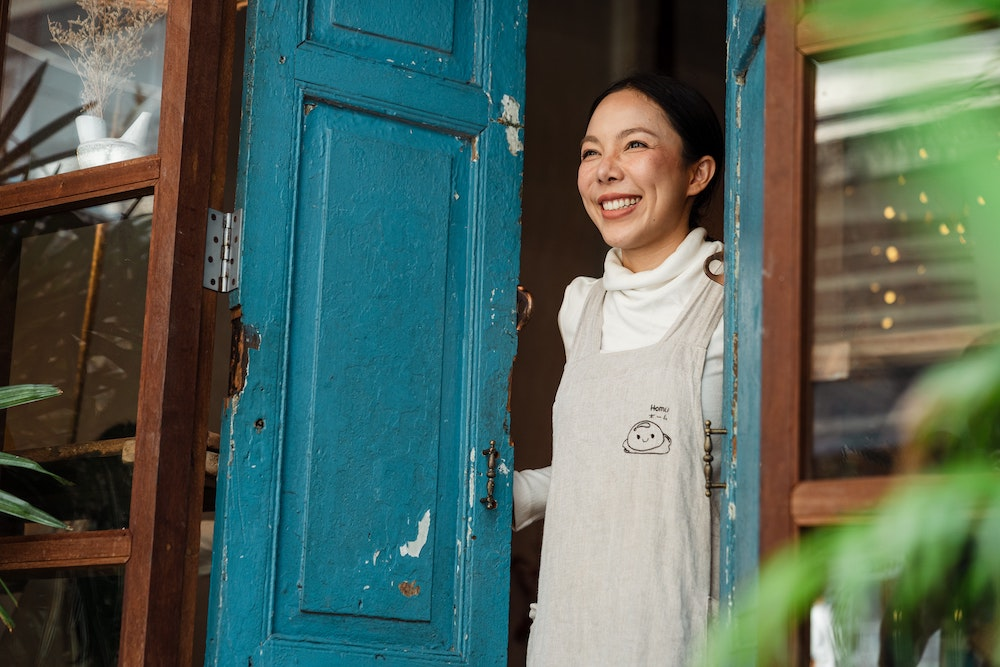
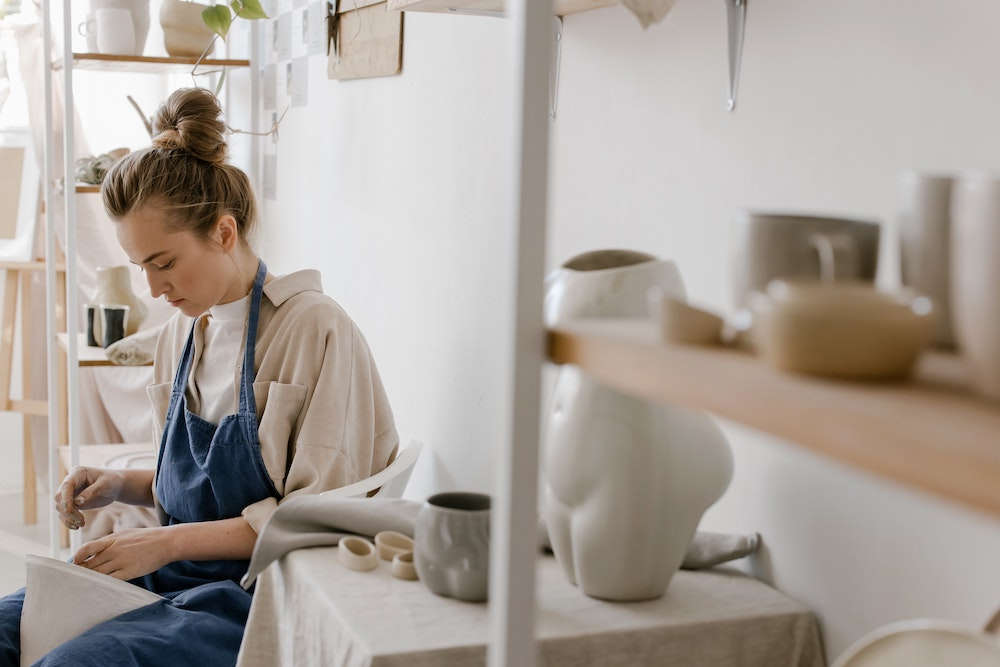
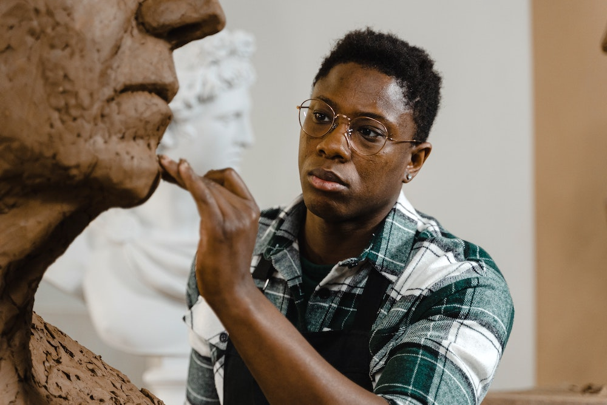
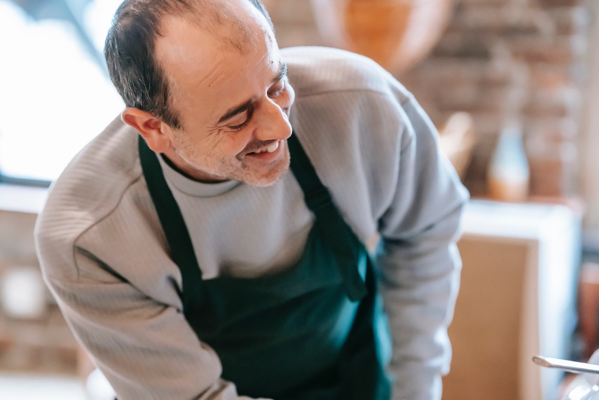
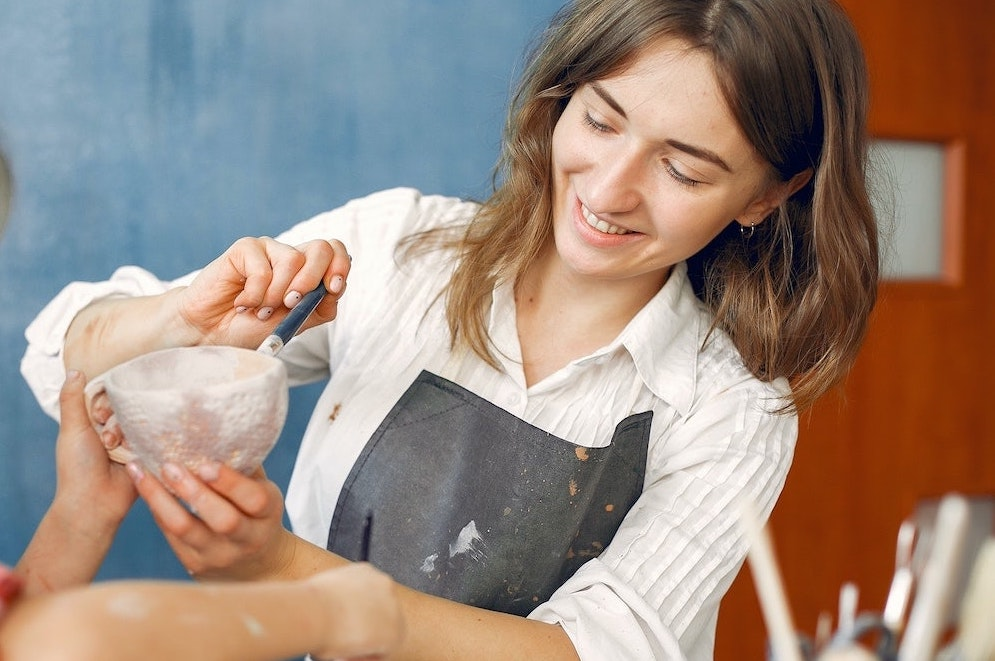

Om oss
Vi vill att knuten ska vara en kreativ samlingsplats för alla
möjliga människor som känner sig nyfikna på lera och keramik. En
öppen och snäll knutpunkt där alla ska kunna känna sig fria att
utforska och skapa gemensamt. Vi tror att vi växer bäst så - när vi
lär oss och jobbar tillsammans och såklart har kul på vägen!
Knutens historia
Knuten keramikverkstad startade upp våren 2018 i Solna. Då var vi
tre personer med en idé och en tydlig tanke om vad vi ville skapa.
Nu har vi växt till en grupp om sex personer som delar samma
vision och 2020 flyttade vi in i nya, större lokaler på
Hantverkargatan i centrala stockholm.
Vägen hit har varit bitvis utmanande med pandemiår och det kaos
och den ovisshet som Corona medfört för oss alla, men mestadels
har resan varit kul och vi är väldigt stolta över vad vi lyckats
skapa. Till stor del tack vare våra fantastiska kursdeltagare!
Vi som jobbar här
På Knuten är alla lärare och hjälps åt att hålla i kurserna. Vi
kommer från olika bakgrunder och har olika specialområden,
tillsammans besitter vi därför en väldigt bred kompetens. Några av
oss har sina rötter i brukshantverkets traditioner medan andra har
en inriktning som kan ses som mer konstnärligt fri. Men något vi
alla delar är ett gemensamt engagemang och en passion när det
kommer till leran som medium, samt en vilja att sprida våra
kunskaper och erfarenheter vidare.

Yan krukov
Ekonomichef
Var med och startade Knuten 2018. Yan har arbetat med
brukshantverk i nästan 20 år och har en gedigen kunskap. Han
leder klasser i drejning och keramik.

Key Subiyanto
Administrativ chef
Var med och startade Knuten 2018. Key har en femårig utbildning
i keramik och glas vid det konstnärliga universitetet i Prag och
flera års erfarenhet i ämnet. Leder klasser idrejning och
keramik.

Tina Lind
Kurssamordnare
Var med och startade Knuten 2018. Utbildad vid Konstfack keramik
och glas. Jobbar ofta skrulpturalt och leder kurser i keramik.

Even Norén
Konstnärlig ledare
Evan är en verksam konstnär med en master från Konsthögskolan i
Oslo. Han han många års erfarenhet av skulpturalt skapande och
jobbar gärna i stort format. Evan leder kursen för skulptur här
på Knuten.

Gary Tideman
Kommunikationsansvarig
Gary har många års erfarenhet av att arbeta med keramik. Det är
han som leder kursen för keramik och kavling. Han har även hand
om kommunikationen så det är ofta Gary ni kommer att ha kontakt
med i samband med bokning av kurser.

Nina kraskiv
Kursledare barngrupper
Nina går just nu sitt sista år på Konstfacks program för keramik
och glas. Hon är mest hos oss på måndagar då hon håller i våra
populära barngrupper.